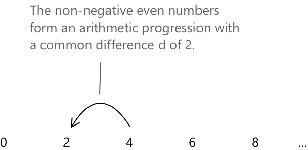
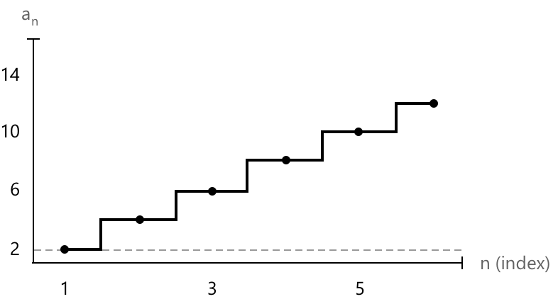

Арифметична прогресія
Що таке арифметична послідовність
Послідовність \( a_n \) називається арифметичною послідовністю (або арифметичною прогресією), якщо вона складається з чисел, розташованих таким чином, що різниця між будь-яким членом і попереднім членом є сталою. Вона характеризується членами вигляду:
\[a_1, a_2, \dots, a_n \quad \text{де} \quad a_n - a_{n-1} = d\]
- За домовленістю, перший член арифметичної прогресії зазвичай має індекс \( n = 1.\)
- \( d \) представляє різницю між двома послідовними членами арифметичної прогресії, і вона відома як різниця прогресії.
- Якщо \( d > 0 \), прогресія є зростаючою.
- Якщо \( d < 0 \), прогресія є спадаючою.
- Якщо \( d = 0 \), прогресія є сталою.
Розглянемо, наприклад, послідовність невід'ємних парних чисел:

Арифметична послідовність також може бути визначена за допомогою рекурентної формули:
\[ a_n = a_1 + n \cdot d \quad \text{де } a_1, d \in \mathbb{R} \]

Арифметична прогресія демонструє характерний сходинковий закономірний вигляд, де висота кожного кроку відповідає різниці прогресії між послідовними членами послідовності.
В арифметичній прогресії кожен член \( a_n \) отримують, додаючи до першого члена \( a_1 \) добуток різниці прогресії \( d \) та \( (n – 1) \). Це дає загальну формулу для \( n \)-го члена:
\[ a_n = a_1 + (n – 1) \cdot d \quad \text{для } n \geq 1 \]
Ця формула дозволяє обчислити будь-який член послідовності безпосередньо, не перелічуючи всі попередні.
Приклад
Нехай задано арифметичну послідовність із першим членом \( a_1 = 2 \) та різницею прогресії \( d = 3 \). Використовуємо формулу:
\[ a_n = a_1 + (n – 1) \cdot d \]
Підставимо значення:
\[ a_n = 2 + (n - 1) \cdot 3 \]
Тепер обчислимо перші кілька членів:
- \( a_1 = 2 \)
- \( a_2 = 2 + 1 \cdot 3 = 5 \)
- \( a_3 = 2 + 2 \cdot 3 = 8 \)
- \( a_4 = 2 + 3 \cdot 3 = 11 \)
- \( a_5 = 2 + 4 \cdot 3 = 14 \)
Отримана послідовність: \[ 2,\ 5,\ 8,\ 11,\ 14,\ \dots \]
Сума \(n\) членів арифметичної прогресії
Сума \( S_n \) перших \( n \) членів \( a_1, a_2, \dots, a_n \) арифметичної прогресії дорівнює добутку \( n \) та середнього арифметичного першого і останнього членів:
\[ S_n = n \cdot \frac{a_1 + a_n}{2} \]
Ця формула дозволяє швидко обчислити загальну суму скінченної кількості членів арифметичної прогресії. Наприклад, розглянемо арифметичну прогресію невід'ємних парних чисел:
\[
2,\ 4,\ 6,\ 8,\ 10
\]
Ми хочемо обчислити суму перших 5 членів \( (n = 5).\) Використовуючи формулу, маємо:
\[
S_5 = 5 \cdot \frac{2 + 10}{2} = 5 \cdot 6 = 30
\]